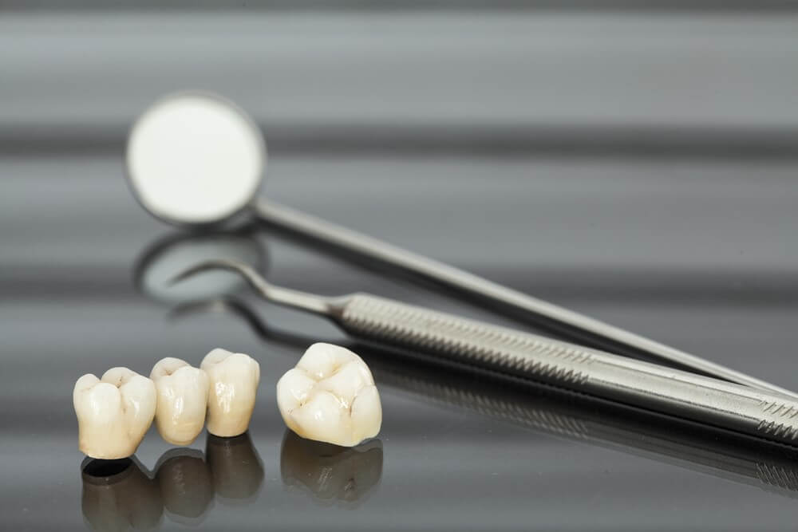
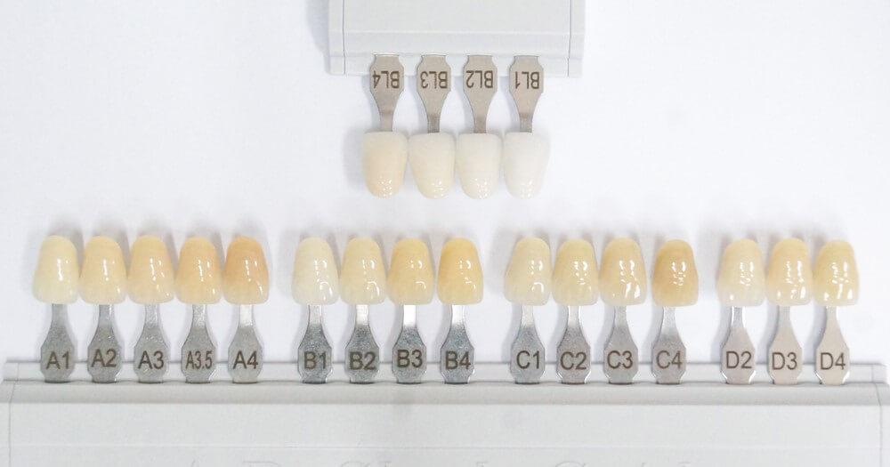

علاج وزراعة الأسنان
تعرَّف من خلال مقالاتنا على أحدث تقنيات علاج الأسنان، وأنجح الأساليب الوقائية للتمتع بأسنان صحيَّة قويَّة، إضافة إلى عمليات زراعة الأسنان، والجسور، والتقويم، وغيرها من المعلومات المتنوعة

طريقة تركيب أسنان الزيركون وتكاليفها في تركيا 2021
يتم الاستعانة بتلبيس الأسنان بالزيركون لعلاج وحماية الأسنان المتأثرة بسبب التسوس أو الكسور وغيرها من الأمور، سنتعرف على الأسنان الزيركون ومميزاتها ومخاطرها في هذا المقال.
جدول المحتويات
ماهو الزيركون لتلبيس الأسنان؟
تُستخدم مادةُ الزيركون في طبِّ الأسنان بكثرةٍ في الآونة الأخيرة، ومنها تلبيسات الأسنان؛ لأنها تعطي الأسنانَ اللونَ والشكلَ المثاليين، بما يتناسب مع لون الأسنان الطبيعي؛ إذ إنها أفضل من المواد الأخرى، كالذهب أو البورسلان.
أنواع تلبيس الأسنان الزيركون
نقدم في علاجك الطبية طيفاً واسعاً من خيارات تلبيس الأسنان التي تناسب كافة الأعمار والأذواق، إذ تُعَدُّ مادة الزيركون من أجود المواد المستخدمة في طب الأسنان، ويمكن استخدامها وحدها، أو ممزوجة مع المواد الأخرى، كما أن لها استخدامات وأنواعاً مختلفة، كالجسور والتيجان، إضافة إلى زراعة الأسنان.

جسر أسنان الزيركون
صُمِّمت جسورُ الزيركون بطريقة مثالية لتحلّ بديلةً عن الأسنان المفقودة، إذ تُثَبَّت الجسورُ على الأسنان الطبيعية المتبقية، أو عبر الزرعات، في حال عدم وجود أسنان طبيعية، إضافة إلى عدة مزايا ومميزات سنأتي على ذكرها في مقالنا.
تيجان الأسنان الزيركون
تعد تيجان الزركونيوم من أهم أنواع التيجان التي شَدَّمَا يُوصى بها في الآونة الأخيرة.
يُفضِّل الأشخاصُ تيجان الزركونيوم إذا ما أرادوا أسناناً جميلة أقرب إلى الطبيعية، ولذا؛ تحرص علاجك الطبية على تقييم دقيق لكل حالة؛ لتقدم العلاج الأنسب لها.
درجات ألوان أسنان الزيركون
يتساءل الكثير عن كيفية اختيار اللون المناسب للتيجان أو الجسور أو الفينير.
نستخدم في علاجك الطبية أحدث دليل للألوان والمسمى بـ 3D-Master أو VITA المشابه لما في الصورة أعلاه.
يُعَدُّ لون الأسنان الطبيعية لون عظمي، أغمق بكثير مما يدركه معظم الناس، ويعتمد نجاح العلاج كثيراً على اختيار اللون المناسب لتيجانك الجديدة أو الجسور أو الفينيرز، ما لم تكن ترغب بتغيير الأسنان بالكامل.
نتميز في علاجك الطبية بتقديم النصيحة المهنية الصحيحة لنتأكد من حصولكم على أفضل النتائج.

ما هي مميزات الأسنان الزيركون؟
من الأقوال الشائعة التي يرددها عملاؤنا بعد اختيار أسنان الزيركون لتحلّ مكان الأسنان المفقودة: "كان يجب أن أقوم بهذا الإجراء منذ سنوات!"، وفيما يلي بعض ميزات الأسنان الزيركون:
- أولاً: المتانة العالية، إذ إنها أقوى من تيجان البورسلين، كما أن جسور الزركونيا قوية ومستقرة استقراراً استثنائياً.
- ثانياً: متوافقة مع خلايا جسم الإنسان، مما يعني أنه لا داعي للقلق بشأن الحساسية أو أي ردود فعل سلبية.
- ثالثاً: تتميز بمظهر شفاف يوفر تطابقًا طبيعيًا مع أسنانك الحالية، ونظرًا لعدم وجود معدن، يتم تجنب الخطوط السوداء أو المعدنية على حافة خط اللثة.
- رابعاً: تتميز بأنها غير قابلة للارتخاء أو السقوط (مثل أطقم الأسنان).
ما هي أضرار تلبيس الأسنان الزيركون؟
تعد أضرار تلبيسات الزيركون وعيوبها ضئيلة مقابل مزاياها، وفيما يلي بعض سلبياته:
- قد يصعب مطابقة سن الزيركون بالسن الطبيعي بعض الأحايين.
- التآكل المحتمل للأسنان الأخرى، إذ يتردد بعض أطباء الأسنان في استخدام تيجان الزريكون في بعض الظروف خوفًا من أن تتسبب صلابة الزركونيا في تآكل الأسنان المقابلة.
طريقة تلبيس أسنان الزيركون
- يُستَخدَم التخدير الموضعي في منطقة العلاج.
- بعد أخذِ التخدير مفعولَه، يبدأ تحضير السن وبرده.
- يأخذ طبيب الأسنان طبعة عن منطقة العلاج والأسنان المحيطة.
- يوضَع تاج مؤقت على السن؛ حتى تُحضَّر تلبيسات الزيركون.
- في علاجك الطبية يتم تحضير تلبيسات الزيركون بأسرع وقت، عبر استخدام أحدث التقنيات.
- يركّب طبيبُ الأسنانِ تاجَ الزريركون على السن المعدّ مسبقاً، ويثبته بمادة خاصة للأسنان.
قبل تركيب وتلبيس الزيركون
تتوزع المهامُّ قبل التركيب، بين طبيب الأسنان ومتلقي العلاج.
بالنسبة لطبيب الأسنان، يجب أن يعطي اهتماما خاصة لتحضير السن، فتحضير الأسنان الأمامية مختلف عن الخلفية، وعموماً، فإنه عند تحضير السن لتلبيسات الزيركون، يجب التأكد من وجود مساحة كافية لسمك الجدار ليكون بحد أدنى 0.5 مم، وعلى الأقل بين 1 مم و 1.5 مم، أو 1.5 إلى 2 مم للحد من الإطباق.
يمكن خلال زيارة واحدة تركيب تاج مؤقت، ثم تثبيت التاج الدائم في الزيارة التالية.
أما المهام المتعلقة بمتلقي العلاج، فتتلخص في الحفاظ على نظافة الأسنان، وعلى التعويضات السنية المؤقتة حتى انتهاء العلاج، إضافة إلى اتباع التعليمات.
ما بعد تلبيس الزيركون
من المعروف أن تلبيسسات الزيركون طويلة الأمد، ولذا؛ يتحتم على المهتمين بهذا العلاج أن يكونوا على دراية كاملة بخصائص الزيركون وأساليب رعايته؛ للمحافظة عليه.
إن تيجان الزيركون مصممة لحماية الأسنان من التلف المتزايد، فمن الضروري أن تكون ملائمة ومثبتة تثبيتاً صحيحاً؛ لتجنب حدوث مضاعفات، فلا يمكن تجاهل أخطاء تلبيسات الزيركون، بل يجب معالجتها على الفور من أجل سلامة المريض.
يجب على الأطباء فحص هوامش التاج بدقة لتجنب الأخطاء المحتملة أثناء التثبيت.
إذا لم يُثبَّت التاجُ تثبيتاً صحيحاً، فإن هذا يسمح للعاب والبكتيريا بدخول التاج من الهوامش أو الفراغات، ويمكن أن يؤدي ذلك إلى تسوس الأسنان والالتهابات.
تبييض أسنان الزيركون
لا تعمل طرق تبييض الأسنان التقليدية على الزيركون أو البورسلين أو غيرها من المواد المستخدمة في طب الأسنان، مما يجعل تبييضَ أسنانِ الزيركون بعد تثبيتها مستحيلاً.
تقاوم أسنانُ الزيركون البقعَ الناتجةَ عن القهوة والشاي والنيكوتين مقاومةً أفضل بكثير من التيجان المصنوعة من السيراميك أو الأكريليك، وهذا مهم جداً للذين يفضّلون الابتسامة الطبيعية ويولونها الأولوية القصوى.
قد يكون من الضروري إجراء تعديلات في لون التاج بمرور الوقت، إذ تتغير الأسنان الطبيعية بسبب تبقعها أو تقدم العمر.
نتائج أسنان الزيركون قبل وبعد
نتائج تلبيس أسنان الزيركون قبل وبعد في تركيا
أسعار تركيب وتلبيسة الأسنان الزيركون في تركيا
تُعَدُّ مادة الزيركون من أفضل المواد المستخدمة حديثاً لصناعة التعويضات في طب الأسنان، وتقدم تركيا ولاسيما علاجك الطبية فيها، علاجاتٍ متطورةً، وبتكاليف مناسبة، ويمكن القول إن أسعار تلبيسة الأسنان في تركيا تبدأ من مئة وخمسة وثلاثين يورو للسن الواحد لتلبيسة الزركونيم.
تحرير: علاجك الطبية©
الأسئلة الشائعة حول تركيب اسنان الزيركون
يشتهر الفينيير في علاج الأسنان بأنه يستخدم مادة البورسلين أو الخزف، والمقصود بالزيركون في السؤال، استخدامُ مادة الزريكون للفينيير، ويكمن الفرق بينهما في أن الزيركون طويل الأمد، إضافة إلى جماليته التي تضاهي الأسنان الطبيعية.
من المهم جدًا معرفة كيفية العناية بأسنان الزيركون جيدًا؛ ابتغاء الحفاظ على المظهر الجمالي الممتاز لفترة طويلة.تمامًا مثل أسنانك الطبيعية، تتطلب تيجان الأسنان كثيراً من الاهتمام والرعاية.
لا، لأن أسنان الزيركون مقاومة للتبقع.
لا تسبب تلبيسة الزيركون رائحةً كريهةً للفم؛ لأنها معدة وفق أحدث النظريات في طب الأسنان.
إن إزالة تلبيسة الزيركون ليست بالمهمة السهلة إذا ما أردنا الحفاظ على سلامة السن أسفله، وهذا مقارنة بالتيجان والتعويضات المصنوعة من المواد الأخرى.
يتميز الزيركون بحفاظه على لونه ومقاومته للتصبغات.
تتميز تلبيسات الزيركون بقوتها وطول عمرها؛ إذ يمكن أن تبقى معظم التلبيسات بحالة جيدة جدًا لمدة تصل إلى عشر سنوات أو خمس عشرة سنة، وقد تمتد مدى الحياة.
يجب وضع المواد اللاصقة على التاج بالتساوي على السطح الداخلي ، لتجنب فقاعات الهواء ، وليس أكثر من النصف ممتلئ. يتم وضع التاج بإحكام على أسنان نظيفة ومعزولة وجافة مباشرةً ، مما يوفر قوة كبيرة وضغطًا ثابتًا لضمان التموضع الكامل والتخلص من المادة اللاصقة الزائدة. ويقوم طبيب الأسنان بإلقاء الضوء لمدة 20 أو 30 ثانية حتى يتماسك اللاصق بشكل أسرع وأفضل. بمجرد ثبات المادة اللاصقة ، تتم إزالة الفائض بعيدًا عن الهوامش باستخدام الأدوات اليدوية ، ويتم تنظيف المناطق بين الخيوط.
نعم. تبدأ أسعار التيجان الخزفية من 100 يورو للسن ، بينما تبلغ تكلفة الزركونيا 135 يورو.
ليس من الشائع الحصول على أي رائحة من التيجان. السبب الرئيسي سيكون التهاب اللثة
توفر تيجان الزركونيا مظهرًا شفافًا يتناسب بشكل طبيعي مع أسنانك الحالية.
يتميز الزركون بالحفاظ على لونه
لا , تيجان الزركونيا مقاومة للبقع.
من الصعب إصلاحه. يفضل استبداله.
نعم ، يمكن إزالة تيجان الزركونيا.
نعم يمكن ذلك
لا ، لا يمكن إعادة تشكيل تيجان الزركونيا.
إنه قوي في الانضغاط ، ولكن من المرجح أن يتكسر أكثر من التيتانيوم.
لا تعمل طرق تبييض الأسنان التقليدية على الزركونيوم أو البورسلين أو المواد الأخرى المستخدمة في طب الأسنان ، مما يجعل من المستحيل تبييض أسنان الزركونيا بعد التثبيت. لكن يمكن تعديل تيجان الزركونيا لتتناسب مع لون الأسنان مرة أخرى.
نعم ، لكن تيجان الزركونيا لها أنواع مختلفة ، وأحد هذه الأنواع شديد الشفافية.
نعم ، تيجان الزركونيا آمنة. بدون رد فعل تحسسي.
نعم ، معظم ممارسات طب الأسنان تتحول من التيجان الخزفية التقليدية (المنصهرة إلى المعدن) وتتجه نحو استخدام الزركونيا لإنشاء ترميمات أسنان ثابتة.
لا. تيجان الأسنان المصنوعة من الزركونيا خالية تمامًا من المعادن.
لوحظ أن الزركونيا تتمتع باستجابة فائقة للأنسجة الرخوة ، وتوافق حيوي ، وجماليات لتلك الموجودة في غرسات التيتانيوم.
نعم ، تمتلك تيجان وجسور الزركونيا جماليات ممتازة وهي غير قابلة للتدمير تقريبًا. بالإضافة إلى ذلك ، أصبح الزركونيا أكثر المواد شيوعًا لصنع تيجان الأسنان والترميمات الأخرى.
لا. تشير المعلومات التي تم جمعها من المنظمات المهنية مثل جمعية طب الأسنان الأمريكية إلى أن السمية ليست مصدر قلق لأولئك الذين يتلقون تيجان الأسنان.
اطلع على أحدث المنشورات والأخبار الطبية
عمليات شفط الدهون بالفيزر في تركيا والأسعار 2021
يعتبر شفط الدهون بالفيزر من أفضل عمليات علاج السمنة المفرطة. تعرف معنا على مميزات وعيوب شفط الدهون بالفيزر وكيف تتم العملية وشاهد الفرق قبل وبعد في تركيا.
طرق علاج طول النظر في تركيا وأحدث التقنيات
يعاني الكثير من كبار السن وحتى البالغين من مرض طول النظر . سنتحدث في هذا المقال عن كيفية علاج طول النظر وأسباب هذا المرض ونسبة نجاح العلاج .
الفرق بين زراعة الشعر في ايران وتركيا 2021
بالرغم من أن أسعار زراعة الشعر بين تركيا وايران لا تختلف كثيرا إلا أن هنالك الكثير من الفروق التي قد تحدد لك الدولة الأفضل لزراعة الشعر فيها.
طرق علاج قصر النظر في تركيا وأحدث التقنيات
يعاني الكثير من الأطفال وحتى البالغين من مرض قصر النظر. سنتعرف في هذا المقال على أفضل طرق علاج قصر النظر وأسباب هذا المرض ونسبة نجاح العلاج .